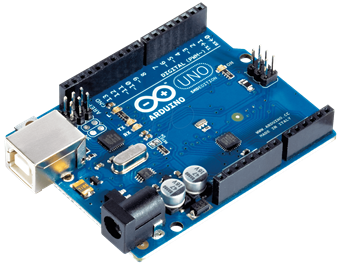
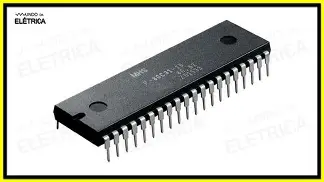

Entrada e saída digital
Binário
É a forma como o sistema interpreta o sinal recebido: apenas 0 ou 1.
O "0" representa um estado desligado/LOW/falso, enquanto o "1" representa ligado/HIGH/verdadeiro.
É o resultado final que o microcontrolador ou PLC usa para tomar decisões na lógica de programação.
O controlador gera um valor lógico 0 ou 1, representando a decisão do programa: desligar (0) ou ligar (1).
Esse valor binário é a instrução que define se o dispositivo externo deve ser ativado ou não.
Físico
Vem de dispositivos que só podem estar em dois estados, como botões, chaves, sensores magnéticos, fim de curso ou relés.
Esses dispositivos mudam entre aberto/fechado ou acionado/não acionado, enviando um sinal simples ao sistema.
O controlador detecta essa mudança física e a converte em um estado lógico (0 ou 1).
O sinal binário aciona um dispositivo físico que pode estar apenas ligado ou desligado, como LED, relé, buzina ou válvula.
Quando a saída muda de estado, o dispositivo reage imediatamente: liga ao receber um "1" e desliga ao receber um "0".
Volts
O nível de tensão elétrica determina qual estado lógico será interpretado.
Tensões próximas de 0 V são lidas como 0 (LOW) e tensões altas (ex.: 3 V, 5 V ou 24 V) são lidas como 1 (HIGH).
Cada equipamento possui faixas definidas de tensão para reconhecer corretamente o sinal e evitar leituras incorretas.
O valor lógico é convertido em um nível elétrico: tensão baixa para 0 (LOW) e tensão alta para 1 (HIGH).
Em microcontroladores, isso geralmente significa 0 V ou 3,3/5 V; em sistemas industriais, 0 V ou 24 V.
O dispositivo conectado interpreta essa voltagem como comando de ligar ou desligar.
Entrada e saída analógica
Binário
Embora o sinal chegue como tensão, o microcontrolador só entende números. Então o ADC converte os volts em um valor digital (binário).
Exemplo:
0 V → 0000000000
2,5 V → valor intermediário
5 V → 1111111111
Mesmo sendo analógica na prática, a saída muitas vezes é gerada digitalmente via um DAC (Conversor Digital-Analógico). O microcontrolador envia um valor binário, que o DAC converte em tensão contínua proporcional.
Exemplo para DAC de 8 bits e 5 V:
00000000 → 0 V
10000000 → 2,5 V
11111111 → 5 V
Físico
É a representação de uma grandeza real do mundo físico como temperatura, luz, pressão, som ou posição que um sensor converte em uma variação de tensão. Ou seja, o fenômeno físico vira um sinal elétrico analógico.
É a grandeza real que o sistema quer controlar ou influenciar no mundo físico. Por exemplo:
LED → intensidade luminosa
Motor → velocidade ou posição
Aquecedor → temperatura
Volts
É uma tensão elétrica variável e contínua, por exemplo 0 a 5 V ou 0 a 3,3 V, que muda de acordo com o sensor conectado. O dispositivo mede essa variação de tensão para saber o valor do sinal.
É uma tensão elétrica variável que o dispositivo gera, normalmente dentro de uma faixa específica (ex.: 0–5 V ou 0–3,3 V). Essa tensão varia continuamente para representar um valor desejado. Exemplo: controle de brilho de um LED ou velocidade de um motor.
O que é Arduino
Arduino é uma plataforma eletrônica de prototipagem rápida, criada para permitir que qualquer pessoa mesmo sem muita experiência consiga montar projetos de eletrônica e programação.
Ele é muito usado em:
Robótica
Automação residencial
Controle de motores e LEDs
Sensores ambientais (temperatura, umidade, luz)
Projetos escolares e universitários
A grande vantagem do Arduino é que ele combina:
Hardware aberto (você pode até construir sua própria placa)
Software gratuito

O que é um microcontrolador
Um microcontrolador é o cérebro do Arduino.
Ele é como um mini computador dentro de um único chip.
Dentro dele existem:
CPU (processa instruções do código)
Flash (onde seu programa fica gravado)
RAM (usada enquanto o programa roda)
Periféricos internos como:
Temporizadores (timers)
Conversor Analógico-Digital (ADC)
Interfaces de comunicação (UART, SPI, I2C)
Watchdog (segurança)
A diferença entre microcontrolador e microprocessador:
Microprocessador (como em computadores): precisa de memória, placa-mãe, periféricos externos.
Microcontrolador: tudo integrado em um único chip → menor, barato e eficiente.

Microcontrolador do Arduino
Modelo
ATmega328P (no Arduino Uno)
Fabricante
Microchip Technology (empresa que comprou a Atmel)
Características principais
8 bits
32 KB de memória flash
2 KB de RAM
16 MHz de clock
ADC de 10 bits
Linguagem de programação do Arduino
O Arduino é programado usando uma linguagem baseada em C/C++, porém simplificada para facilitar o aprendizado. Essa versão adaptada é conhecida como Arduino Language.
Características da Linguagem
É fácil para iniciantes, mas poderosa para projetos avançados.
Possui funções prontas para manipular pinos, sensores e módulos.
O código é organizado em duas partes principais:
setup() – executado uma vez ao ligar o Arduino.
loop() – executado continuamente1
Exemplos de Funções Comuns
pinMode(pin, mode) – define o modo do pino (entrada/saída)
digitalWrite(pin, HIGH/LOW) – envia sinal digital
analogRead(pin) – lê valores analógicos
serial.begin(baudrate) – inicia comunicação serial
Onde o Arduino é Programado
O Arduino pode ser programado em diversas plataformas, sendo as principais:
Arduino IDE (oficial)
Ambiente padrão e mais utilizado.
Disponível para Windows, Linux e macOS.
Arduino IDE 2.x
Versão moderna com:
Autocompletar
Depurador (debug)
Interface melhorada
Arduino Web Editor
Acessado diretamente pelo navegador.
Sincroniza projetos na nuvem (Arduino Cloud).
Outras opções de programação
PlatformIO (no VS Code)
Atmel Studio
Eclipse CDT
Entrada Analógica do Arduino
(Referente a placas como Arduino Uno, Nano e Mega, com microcontrolador ATmega)
Faixa de Tensão da Entrada Analógica
0 a 5 Volts (na maioria das placas de 5 V).
0 a 3,3 Volts em placas que operam a 3,3 V.
Resolução em Bits (ADC)
Conversor Analógico-Digital (ADC) de 10 bits.
Intervalo numérico: 0 a 1023.
Tamanho do passo (quantização):
Com 5 V → 4,88 mV por nível
Entrada Digital do Arduino
(Para placas de 5 V como Uno, Nano e Mega)
Nível Lógico LOW
Entre 0 e 0,8 V
Nível Lógico HIGH
Entre 2,0 e 5 V
Tensões entre 0,8 V e 2,0 V são consideradas zona incerta.
Saída Digital do Arduino
Em Placas de 5 V (Uno, Nano, Mega)
Saída LOW: aproximadamente 0 V
Saída HIGH: aproximadamente 5 V
Em Placas de 3,3 V (Due, Nano 33 IoT, etc.)
Em Placas de 3,3 V (Due, Nano 33 IoT, etc.)